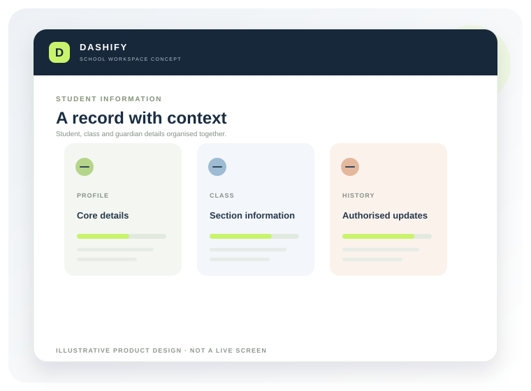
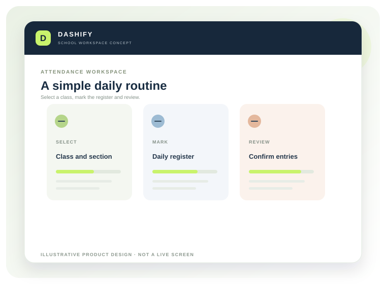
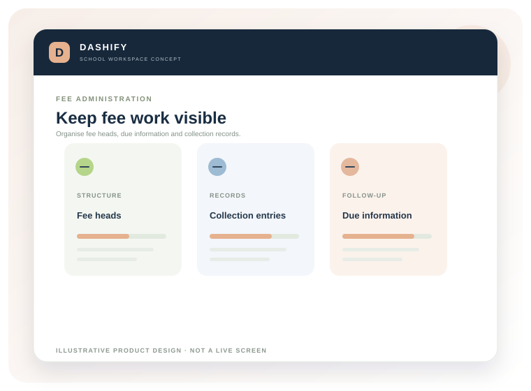

Student information management
Maintain student profiles, admission details, class and section allocation, guardian information and authorised record changes.
DASHIFY is being designed to give school teams a more organised way to manage the information and routines behind each school day.
 Illustrative product concept · DASHIFY by BRIZNOVA
Illustrative product concept · DASHIFY by BRIZNOVA
Not another complicated system.
The first version is being scoped around essential administrative workflows that schools manage repeatedly: keeping student information current, recording attendance, following fee activity and sharing notices.
The product direction is a multi-school SaaS platform with role-aware workspaces and a responsive web experience. The release scope will be confirmed with pilot schools after workflow discovery and technical validation.
These proposed capabilities form the initial pilot scope. Each will be refined with schools before it is treated as a committed release feature.
Maintain student profiles, admission details, class and section allocation, guardian information and authorised record changes.
Support daily attendance entry, class-level review, correction requests and summary views appropriate to staff roles.
Configure fee categories, track expected and recorded collections, review outstanding balances and maintain receipt references.
Prepare and organise school notices, define intended audiences and maintain an announcement record. Delivery channels depend on integrations selected and validated.

01 · STUDENT RECORDS
02 · ATTENDANCE
03 · FEE ADMINISTRATIONThese are proposed starting modules for pilot discovery. The exact feature list and acceptance criteria will be agreed before implementation.
School profile, academic year, classes, sections, basic configuration and authorised user setup.
Organise student identity and school records so authorised staff can find and maintain consistent information.
Support classroom attendance routines and give authorised users a clearer view of records.
Bring fee configuration and collection records into an organised, reviewable workflow.
Help staff prepare consistent school notices and record what has been shared with an intended audience.
Additional modules are candidates for later phases. They are not included in the initial scope unless agreed separately.
Class schedules, timetable views and approved changes to teacher allocation.
Exam schedules, marks entry, result preparation and report workflows.
Appropriate self-service views for attendance, notices, fee information and academic updates.
Staff profiles, leave requests, role assignments and selected administrative records.
Transport routes, vehicle-related records and asset registers where schools need them.
Operational summaries that help school leaders review trends and follow-up areas.
These are design goals guiding product architecture, not claims of completed security certification or production availability.
Different school roles should see and do only what their responsibilities require.
Each school’s records should be logically separated in a multi-school service.
Important changes to records should have an appropriate history and accountability trail.
Core screens should be usable across desktop, tablet and mobile browsers.
Architecture, hosting, data-protection controls and integrations will be verified before any school's live information is onboarded.
Share how your school currently manages admissions, attendance, fees and communication. We will use that conversation to assess whether a pilot makes sense.